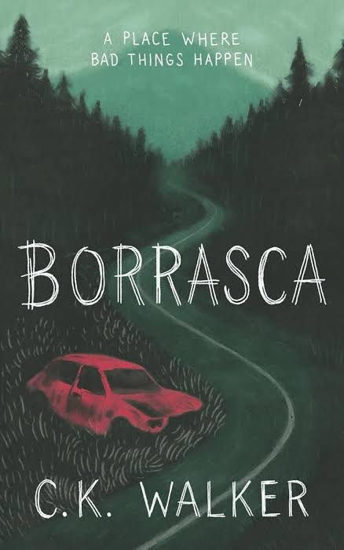

A kid named Sam moved to a small town in Missouri called Drisking, where he befriends two kids, Kyle and Kimber. That's
when he learned about Drisking's eerie legends and stories: the shiny gentlemen, skinned men, and a place called
Borrasca. One day, the three friends explore the woods and discover a strange Tree House connected to a local Legend.
The legend warned that anyone who doesn't carve their name into the tree will disappear. Not long after, Sam's sister
Whitney mysteriously vanishes ran away. Sam spends the next 5 years wondering what happened to her
while more people in town begin disappearing leaving. As Sam, Kyle, and Kimber grow older, they become determined
to uncover the truth behind the disappearances and the Mysterious place located in the mountain known. What begins as a normal childhood
adventure turns into a dark, disturbing mystery. Sam follows a path of pain, tragedy, and terrifying discoveries as he
gets closer to uncovering the secret hidden within the town. The more he learns about Borrasca, the more dangerous his
search for the truth becomes.
Borrasca is an amazing story because it captivates the reader and keeps the mystery interesting throughout. The story
becomes truly more disturbing as Sam gets older and begins searching for answers about his sister and the other
disappearances. The mystery surrounding Borrasca also makes you want to keep reading cuz you constantly want to know
what was really happening. Reading Creepypasta, I expected a monster to be at the end, but what kind of monster showed
up at the end truly shocked me. Overall, I think Borrasca is a memorable and terrifying story.